Expresstic - 專為 iOS 打造的貼圖編輯器
隨心所欲的做貼圖、用貼圖吧！
自 iOS 17 之後，iPhone 和 iPad 的使用者可以 從照片製作貼圖 。
只要在相簿裡選一張照片，長按物件，就可以自動將物件去背並做成貼圖！
使用的方法也相當簡單，只要在 iMessage 上選擇 + 開啟選單，選擇「貼圖」就可以使用了。
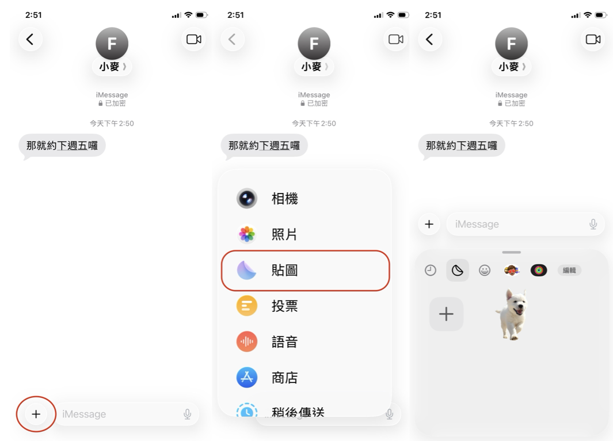
這個功能非常有趣，但是也有一些限制，例如：去背失敗的話無法修改、沒辦法為貼圖加上文字，讓成品稍嫌單調乏味。 因此大家開始想辦法突破，比如先去好背、將文字放到物件上。但效果往往差強人意，且處理起來也比較費工、需要儲存中介的圖檔。
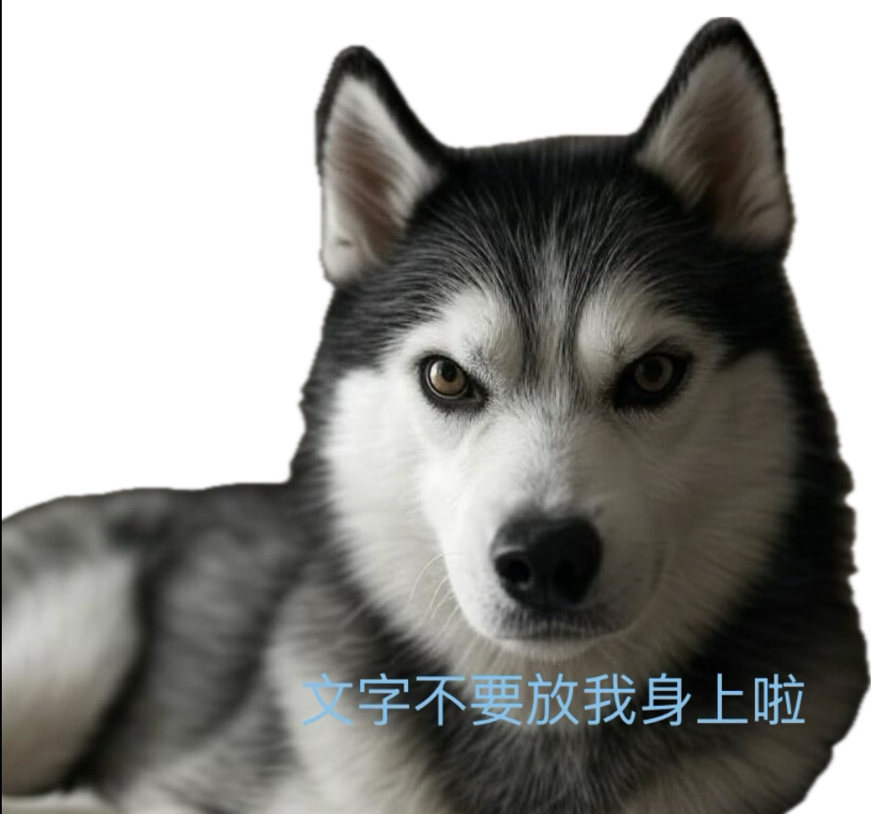
Expresstic 就是為了彌補這些不足而生的！ 今天就要教大家如何用 Expresstic 輕鬆做出高品質、又充滿個人風格的貼圖，成品不但能像系統貼圖一樣的在 iMessage 中使用、拿來裝飾照片，還可以匯到 WhatsApp、Telegram、 LINE拍貼，做成貼圖包喔！
首先，用 iPhone 或 iPad 下載 Expresstic (App Store 連結)，如果喜歡畫畫的話，用 iPad 會更適合。

打開 App 之後，會發現已經在基本貼圖集裡面了，按下 + 號可開啟貼圖編輯器，開始第一張貼圖的製作。
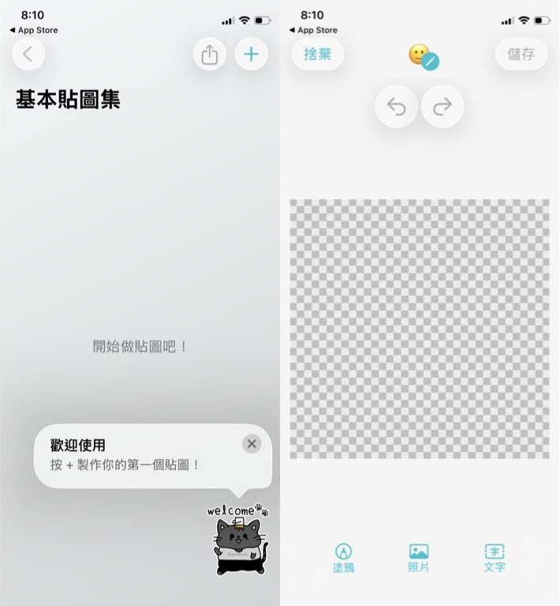
底部欄位有三個按鈕，分別用來新增塗鴉、照片和文字，全部都不限新增個數和順序。 我們先從新增照片開始：點選「照片」開啟相簿，選擇想要的照片之後點選「自動剪裁」即可自動去背，如果對去背結果不滿意，點「下一步」之後可以進行手動精修。
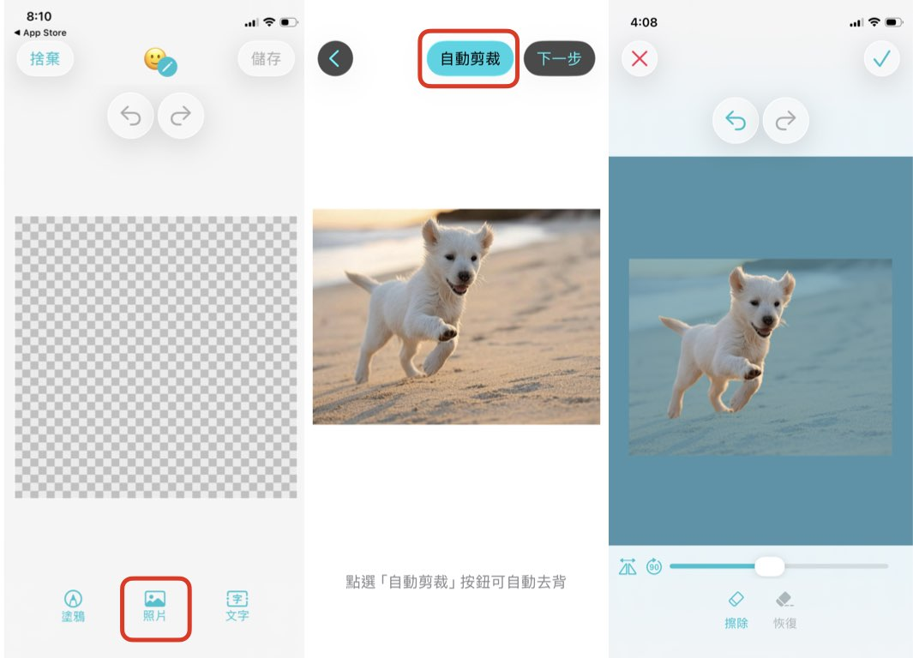
在手動去背模式中，你可以用兩指縮放圖片、用左下角的按鈕來鏡射或旋轉圖片，方便順手的去背。在擦除狀態下，長按右上角的虛線方框按鈕，會以白邊提示目前留下區域的邊界，可以更容易發現遺漏的地方。
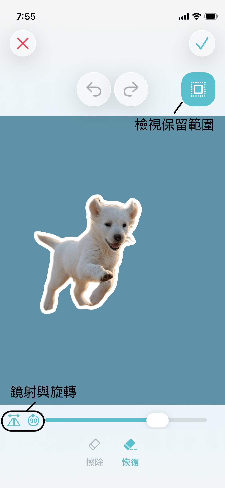
完成後，點選右上角的勾勾，這樣就完成一個照片物件了。點選物件可以看到控制框，此時你可以拖動整個物件來移動他、拖曳控制框上的點點可以縮放物件和旋轉物件。 接下來，我們幫物件描邊，點選底部欄位的「編輯樣式」可以為物件加入邊線，並調整邊線寬度和顏色。
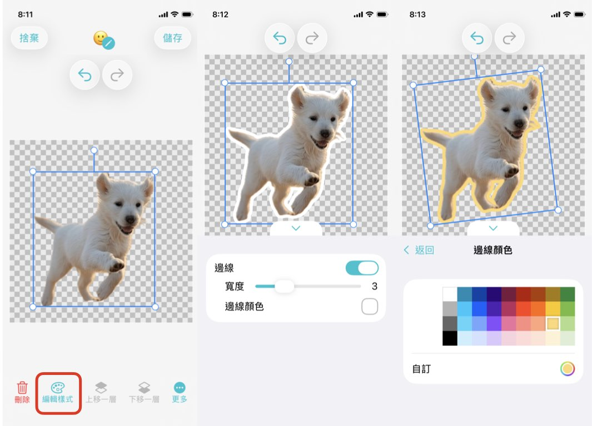
點選任意空白區域可以讓物件脫離調整模式，再次回到新增模式，這次我們要新增一個「文字」物件。點選文字按鈕後，會看到一個文字物件出現在畫面上，點選他一下進入調整模式，再點他一下就可以編輯文字。文字的部分一樣可以透過編輯樣式加入邊線，還有選擇字體、字距、直書等可選擇。
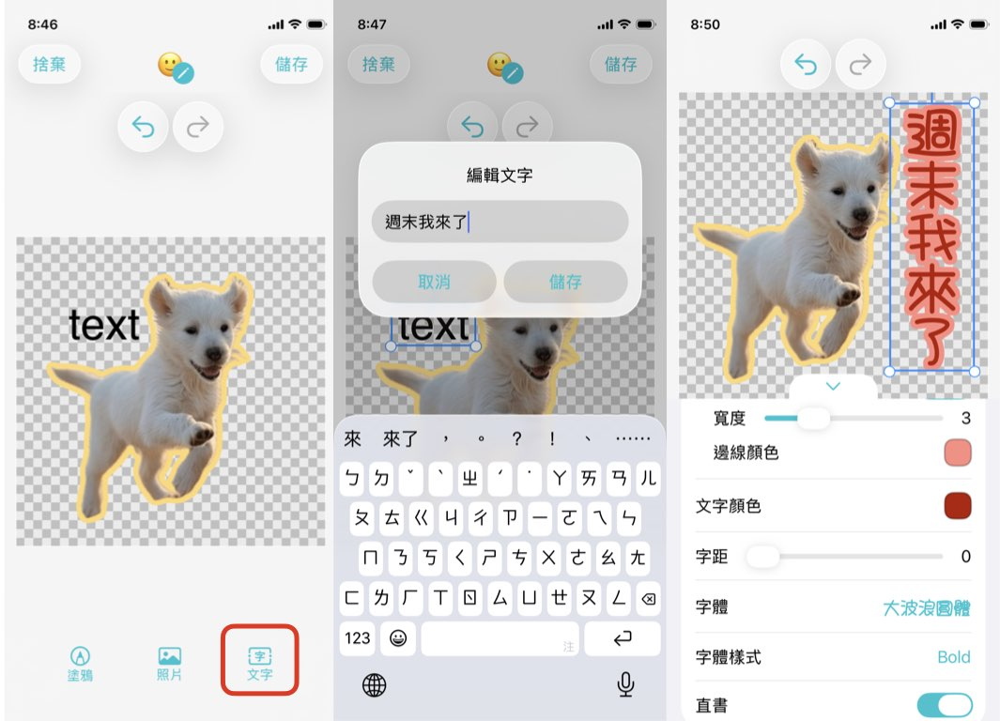
最後我們可以加入塗鴉，讓貼圖更有自己的風格！點選「塗鴉」開啟塗鴉編輯器，在塗鴉編輯器中，你可以使用筆刷、橡皮擦、填色桶來創作，兩指可以縮放編輯區、「顯示底圖」可以讓你更容易在目前的貼圖上作畫，例如幫狗狗加上墨鏡。使用 iPad 的話可以用 Apple Pencil 更細緻的描繪，點兩下 Pencil 側邊可以快速切換筆刷和橡皮擦。
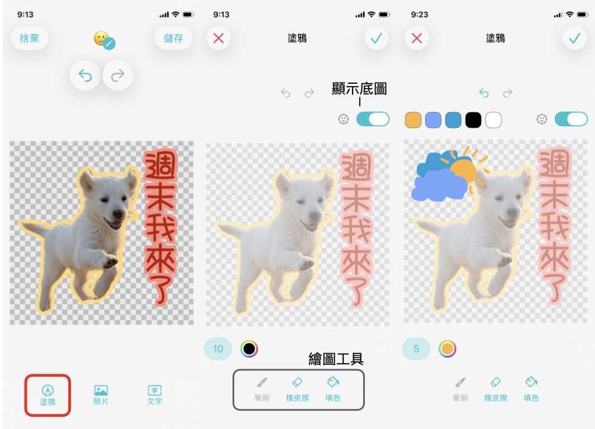
完成的塗鴉就像其他物件一樣，可以調整位置、旋轉、加邊線，你可以加入許多塗鴉，再依照喜好編排他們的位置和圖層順序。按下儲存，我們就完成一張貼圖了！
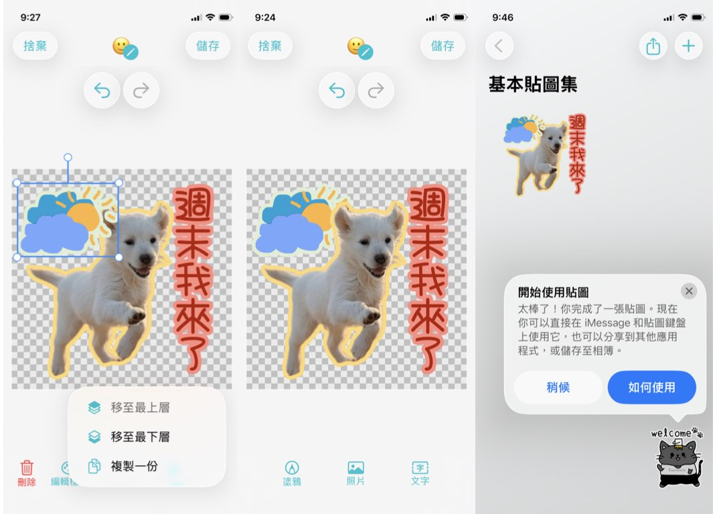
重頭戲就是使用自己做的貼圖啦～這邊不需要額外設定，用法就跟系統貼圖一樣！要在 iMessage 上使用的話，我們一樣打開 iMessage，選擇要對話的人，按 + 開啟選單，選擇「貼圖」，找到 Expresstic 的分頁，就可以點選傳送這張圖囉！
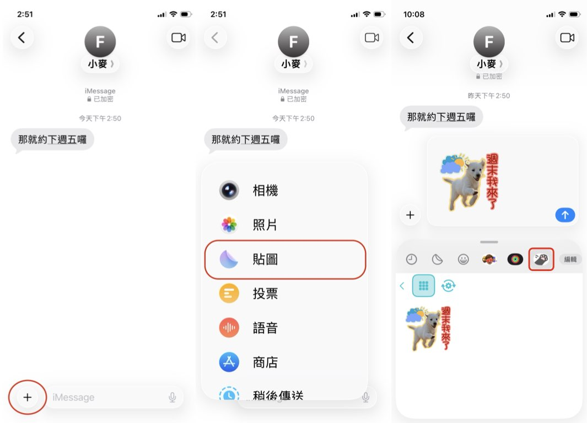
也可以加到相簿當裝飾：在相簿選一張照片，進入編輯模式。點右上角筆頭按鈕，在控制欄上按 + 號，加入貼圖，就可以把做好的貼圖拿來裝飾相片了。 注意這邊加入的貼圖，色調會受到照片本身影響，所以如果要調整色調、亮度、加濾鏡的話，建議先加上貼圖之後再一起調整喔！
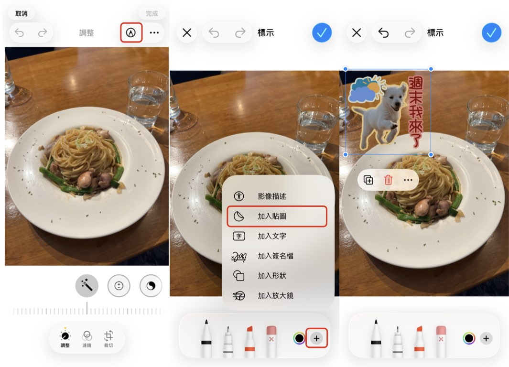
如果想要用來裝飾 Instagram 的限時動態也沒問題，我們回到 Expresstic 的基本貼圖集，長按剛剛做好的貼圖，選「拷貝圖片」後，再到限時動加入文字，在輸入文字處長按空白處，選擇「貼上」即可。
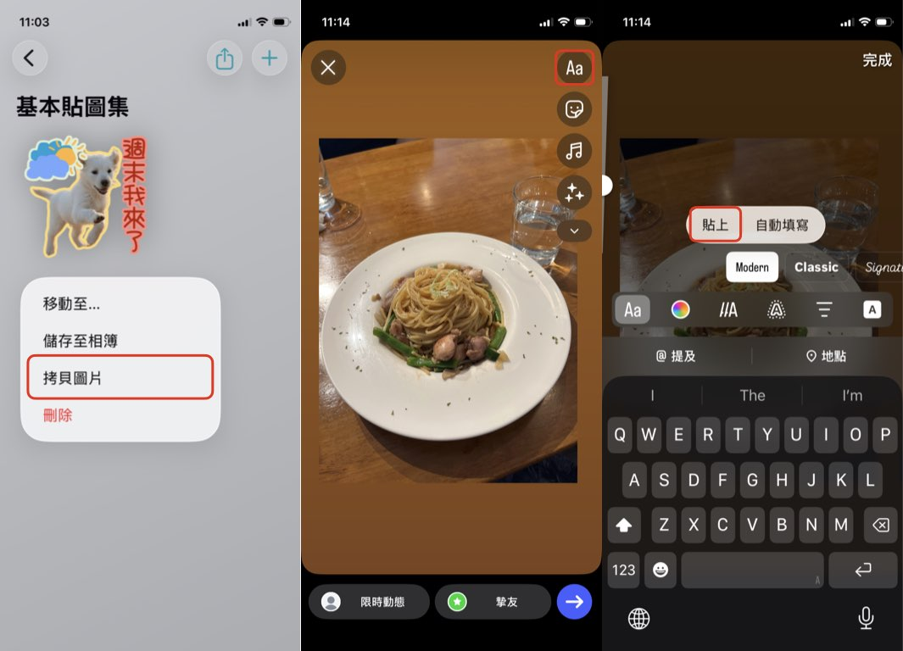
如果做了好幾張，想要建立 WhatsApp、 Telegram 或 LINE 貼圖包，或是直接下載到相簿，可以點選右上角的「分享」按鈕。想要製作 LINE 貼圖的話需要先下載 LINE 拍貼，因為 LINE 貼圖需要通過審核。下載後點選「選擇應用程式」找到「LINE拍貼」後即可把貼圖傳到 LINE拍貼。
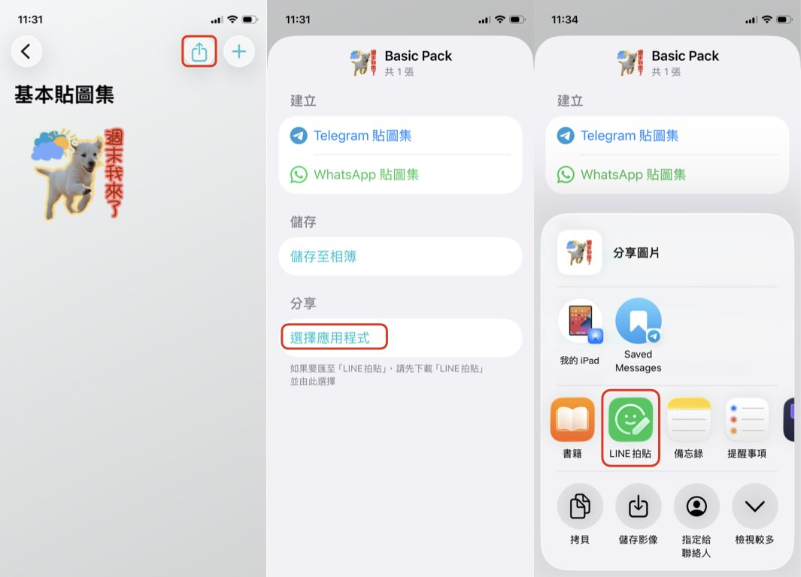
在 Expresstic 做好的貼圖，最大的優點就是可以重複編輯！只要輕點我們剛剛做好的貼圖，就可以再次進入編輯器，覺得配色不搭或看膩了，馬上就可以回來調整！
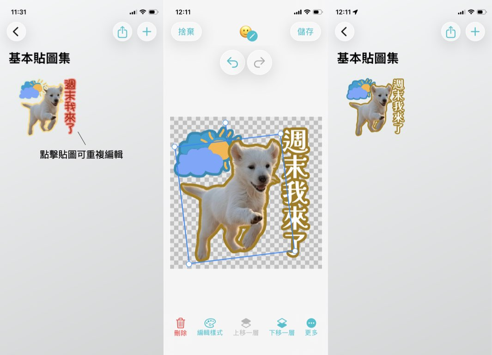
Expresstic 的免費版就可以完整使用編輯器的功能，基本貼圖集總共也有三個免費空間，對於輕度使用者來說應該很夠用了。如果想要做更多貼圖、自訂自己的貼圖集、使用 iCloud 儲存，也可以升級進階版。所有使用者都可以免費試用進階版三天，如果只是想要先試用看看，可以在啟用試用後，立即到「管理訂閱」取消續訂，就不用擔心試用期結束後被收費囉～
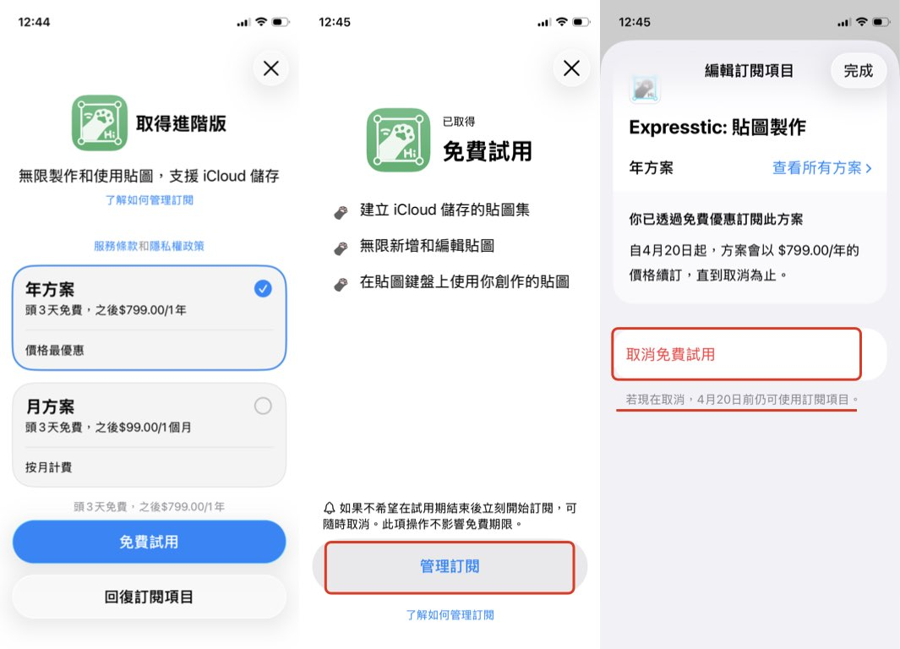